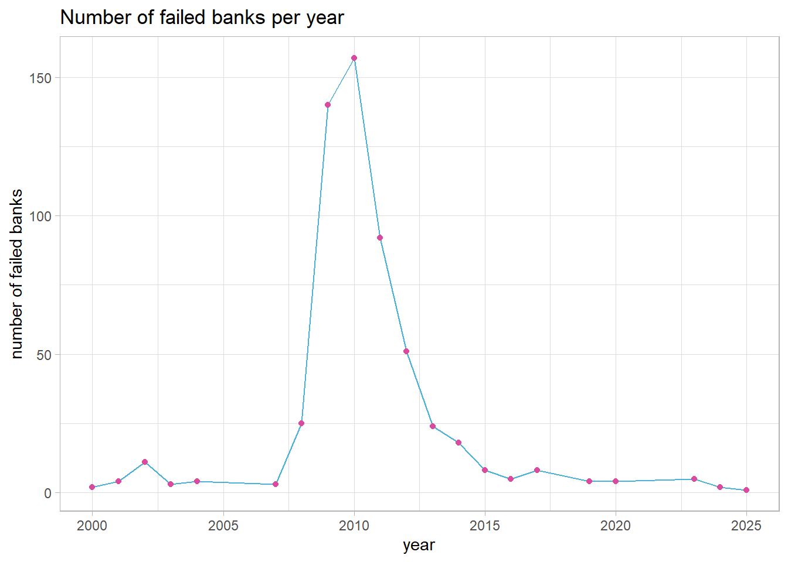
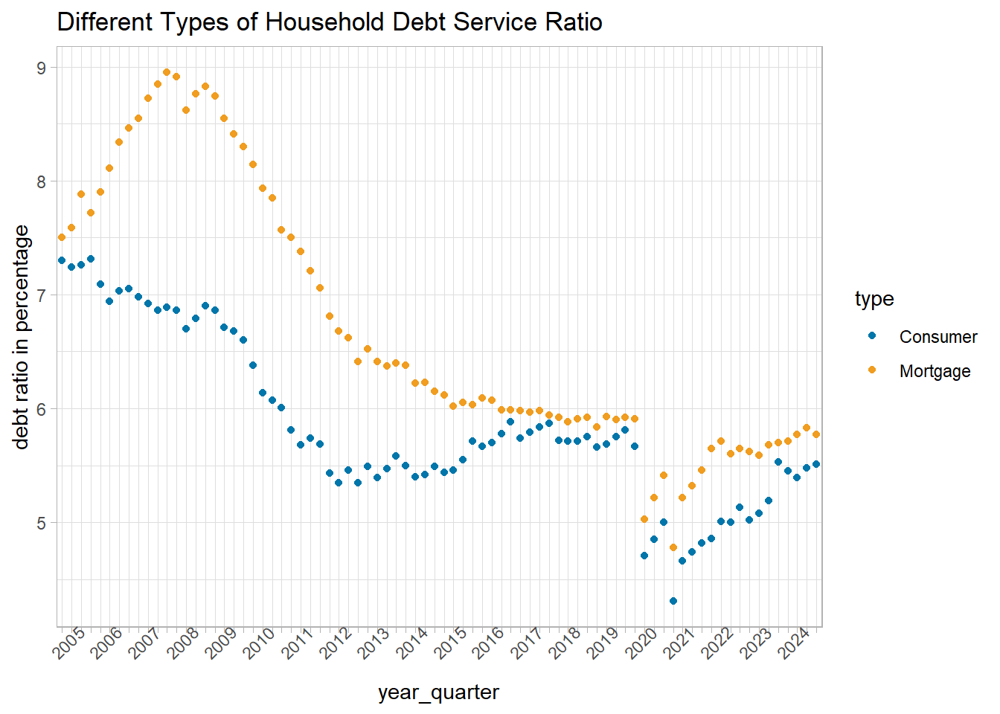

The Ripple Effects of the 2008 Financial Crisis on the U.S. Economy
Author
ZXWL
What impact did the 2008 financial crisis have on the economy?
Introduction
The 2008 financial crisis, also known as the Great Recession, was the most severe economic recession in the United States since the Great Depression. It not only dealt a heavy blow to financial institutions and economic markets, but also severely impacted the real estate market, leading to economic turmoil and a wave of unemployment. This project will analyze the impact of the financial crisis on various aspects of the United States through various data I have collected, including but not limited to the number of bank failures, unemployment rate, household debt repayment rate, etc. I want to better understand the chain reaction of the collapse of the financial system on the overall economy by studying these indicators. I want to study this issue because many recent new policies to increase tariffs in various countries have caused economic market turmoil, which makes me want to look back at the harm caused by the 2008 financial crisis to all parties. I believe that only by understanding the past economic situation and analyzing special events can we have a stronger ability to predict and respond to future economic situations.
Data 1: Analysis between bank failures and financial crises
plot1 <-ggplot( year_count,aes(x = year, y = n)) +geom_line(color ='#4ab1da') +geom_point(color ='#da4a9f') +labs(title ='Number of failed banks per year',x ='year',y ='number of failed banks' ) +theme_light()print(plot1)

This question is discovered by counting the number of bankruptcies in the United States, and focuses on analyzing whether the fluctuation in the number of banks in this year is related to special financial events. Regarding the study of this issue, I chose the year as the independent variable and the number of bank failures each year as the dependent variable to study this issue. From the statistical years and the number of bank failures in the table, as well as the line chart drawn based on the table, it can be seen that the number of bank failures began to rise in 2008, and then rose sharply to 140 in 2009. The number of bank failures in 2010 reached a peak of 157, and it did not return to normal until around 2015. The year with the sharp fluctuation in the number of bank failures corresponds to the 2008 US financial crisis. From the outbreak of the subprime mortgage crisis in 2007 to the bankruptcy of Lehman Brothers in 2008, the global economy fell into recession in 2009. From here, we can see that the data shows that the number of bank failures in 2009 and 2010 has increased sharply, which does not match the years of 2008 and 2009 when the financial crisis broke out the most severely. However, we need to note that bank failures do not happen all at once, but there is a lag of several months to a year. In addition, banks cannot be declared bankrupt at will, but need to be taken over and closed by the FDIC. This process requires waiting for the evaluation process, and then going through the procedures of liquidation, takeover, and finding an acquirer. Therefore, the time when it is finally recorded in the data is about a year behind the actual outbreak of the financial crisis. This result proves that the years when a large number of banks failed are indeed directly related to special economic events.
Data 2: Analysis between unemployment rate and financial crisis
This combination of area chart and line chart is a time series chart. The variable I am mainly interested in is unemployment rate. For this chart, the independent variable I chose is time, which is actually based on monthly changes, and the dependent variable is the unemployment rate percentage. From the chart, we can see that the unemployment rate suddenly soared in just a few months in the first few years of 2010, and then gradually declined after 2010. This time coincides with the outbreak of the 2008 financial crisis. With the outbreak of the subprime mortgage crisis, the real estate market collapsed, and then banks also went bankrupt. Many companies had no money to continue to maintain, and a large number of companies went bankrupt, and the number of jobs in the job market decreased. Even if some companies barely survived, they would lay off employees of different scales. Under multiple reasons, the unemployment rate rose sharply, and the curve of the statistical chart is completely consistent with the negative impact of the subprime mortgage crisis. It is also worth mentioning that in the last few months of 2020, there was also a sharp rise in the unemployment rate. This wave of rise was caused by the impact of the new crown epidemic, and because of the extremely strong infectiousness of the virus and the high initial mortality rate, the unemployment rate climbed to a very terrifying peak in a shorter time than the subprime mortgage crisis. It can be seen from this that, to a certain extent, the unemployment rate can be used to infer the time when social and economic problems will occur and conduct a study.
Data 3:
Code
dt4 <-read_csv('household-debt-service-ratios.csv')dt5 <-pivot_longer( dt4,cols =c('Mortgage', 'Consumer'),names_to ='type',values_to ='ratio' )quarter_type <-unique(dt5$Quarter)plot3_label <-ifelse(grepl(':1$', quarter_type),sub(':.*', '', quarter_type),'')plot3 <-ggplot( dt5,aes(x = Quarter, y = ratio, color = type)) +geom_point() +labs(title ='Different Types of Household Debt Service Ratio',x ='year_quarter',y ='debt ratio in percentage' ) +scale_color_manual(values =c('Mortgage'='#f09d20','Consumer'='#0076aa' )) +scale_x_discrete(breaks = quarter_type, labels = plot3_label) +theme_light() +theme(axis.text.x =element_text(angle =45))print(plot3)

This graph is a time series scatter plot, using data about the percentage of household debt repayment rate, with the basic time unit being four quarters of a year. The independent variable used in this graph is time, and the dependent variables are the mortgage debt repayment rate and the consumer debt repayment rate. Conceptually, the mortgage repayment rate is the ratio of income used to repay mortgage debt, while the consumer debt repayment rate is the ratio of income used to repay various debts such as credit cards, car loans, student loans, and consumer installment loans. From this table, we can see that at the beginning of 2005, the repayment rates of these two debts were relatively close, but in the two years before the outbreak of the financial crisis, the mortgage repayment rate had already risen sharply, while the consumer loan repayment rate gradually declined, and then there was a small decline in the quarter when the financial crisis broke out in 2008, and then it rose again, and then it declined year by year until the outbreak of the COVID-19 pandemic in 2020. The economic crisis in 2008 was mainly caused by mortgages, also known as the subprime mortgage crisis. Because banks were willing to lend to people with bad credit, house prices soared. The more people borrowed, the more they had to pay back. Therefore, the mortgage repayment rate in the income ratio increased significantly, which led to less money available for other expenditures, so it would reduce consumption, and naturally the consumption repayment rate also decreased. In addition, banks also gradually tightened credit card limits during this period, which further promoted the data shown in the picture. After the crisis broke out, the value of many people’s houses was lower than the loan amount, so the pressure to repay mortgages continued to increase, which also led to a further decline in consumption. In order to avoid such problems in the future, banks later reduced subprime loans and the amount of loans allowed, so later the mortgage repayment rate and the consumption repayment rate returned to a similar ratio and both dropped significantly. This shows that the impact of the 2008 economic crisis can be well understood from the analysis and interpretation of these two data.
This figure is a bar chart drawn by year, showing the changes in the average charge-off rate of residential loans of banks in the United States each year. The independent variable I chose for this bar chart is the year time, and the dependent variable is the average charge-off rate of residential loans. Residential loans are usually loans for purchasing real estate for housing. The charge-off rate is the ratio of the unrecoverable part of residential loans to the formal base loss, which is commonly called bad debt. It can be clearly seen from the figure that in the years from the outbreak of the financial crisis, that is, from 2008 to 2013 when the subsequent impact of the financial crisis gradually disappeared, the bars of the bar chart in these five years are much longer than those in other years. From this we can know that since 2008, a large number of mortgages have not been recovered, which triggered the subprime mortgage crisis in 2008, and this data continued to rise in 2009 and peaked in 2010. It was also between 2009 and 2010 that the US economy suffered the greatest damage and impact. This is not only the cause of the 2008 financial crisis, but also the crazy rise in negative economic data caused by it.
Geographic scope: Covers the entire United States.
Level of Analysis: The analysis is the ratio of the money used to repay various debts to total income of American households as a household unit.
Time Frame: 1980 to 2025.
Data Description: The DSR measures the proportion of a household’s disposable income that is used to repay various debts, including mortgages, consumer credit and their combined total ratio.
Data Name: Charge-Off and Delinquency Rates on Loans and Leases at Commercial Banks.
Geography: Covers the entire United States.
Level of Analysis: The analysis object is the write-off rate of the loan category summarized by quarterly unit in different years.
Time Frame: 1985 to 2025.
Data Description: This data records the write-off rates of various loan types (including residential, commercial, etc.) by major banks in the United States. The write-off rate here reflects the proportion of unrecoverable parts of various loans, that is, the proportion of people who cannot repay their loans, which is also known as bad debts. However, my data table extracts the two variables of time and residence separately.